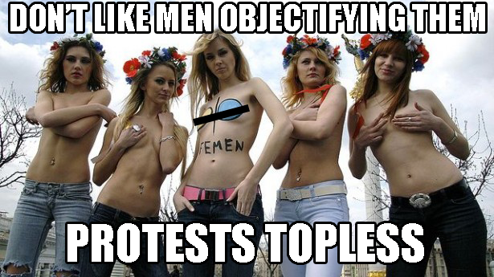
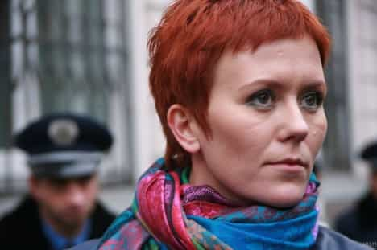
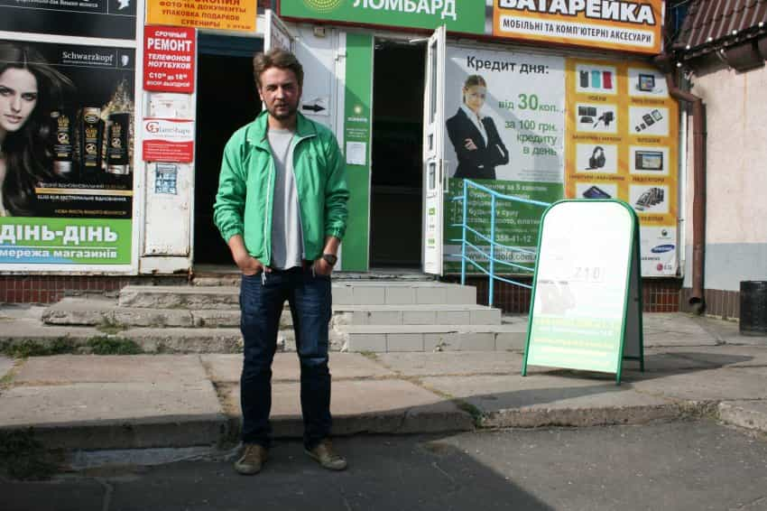
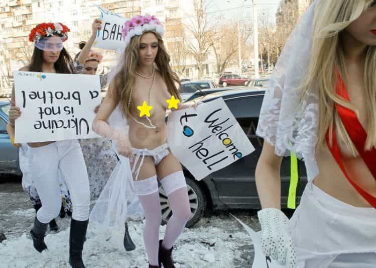

< < < Back
Is FEMEN Promoting Female Degeneracy Under The Guise Of Feminism? – Return Of Kings
(Warning: Most of the images and links in this article are NSFW, so exercise caution)
We’ve noticed, discussed, and known how feminism has slowly spread (or is spreading) throughout the world after its rise in the West five decades back. Men who’ve traveled abroad to find feminine women in traditional societies have also sometimes discovered the slow influx of feminism, and sometimes the appalling rise of feminist activism in those societies. One such example of feminist activism is that of FEMEN.
Background

FEMEN is a feminist protest group whose slogan is Sextremism. It was founded in Ukraine in 2008, and is now based in Paris. The organization became internationally known for organizing controversial topless protests (ranging from from public group urination to softcore street theatre) against “sex tourism,” religious institutions, sexism, homophobia and other social, national, and international topics.
In October 2013 FEMEN had its largest membership in France, with international branches in Poland, Turkey, Israel, Brazil, Germany, the U.S., Canada, Switzerland, Italy, Bulgaria, and Tunisia. A Quebec-based FEMEN is also active, founded by Ukraine-born Xenia Chernyshova. In October 2012 the organization claimed it had about 40 activists in Ukraine, and another 100 who had joined their protests abroad, as well as twenty thousand supporters via the social network Vkontakte.
It’s founder is supposedly Anna Hutsol, who was born in Russia but moved to Ukraine with her parents in 1991.

An economist and a former assistant to singer Tina Karol, she supposedly founded FEMEN in 2008 after she became attuned to the sad stories of Ukrainian women duped by false promises from abroad:
I set up FEMEN because I realized that there was a lack of women activists in our society; Ukraine is male-oriented and women take a passive role. – Anna Hutsol
Other notable “front-women” include Alexandra Shevchenko, Irina Shevchenko, Oksana Shachko, and in recent times, Aliaa Magda Elmahdy.
The FEMEN office in their native Kiev was closed and the organization’s leadership left Ukraine (“Fearing for their lives and freedom”) in August 2013. FEMEN now focus their activities in other parts of the world, to become an “international movement.”
Fiercely anti-religion, FEMEN describes itself as “radical feminism”and it claims to be “fighting patriarchy in its three manifestations – sexual exploitation of women, dictatorship, and religion.” FEMEN has pledged to fight the sex industry and marriage agencies, the Church and its pro-life beliefs and patriarchal society, as well as those who oppose gay marriage.
On its official website FEMEN states: “FEMEN – is sextremism serving to protect women’s rights, democracy watchdogs attacking patriarchy, in all its forms: the dictatorship, the church, the sex industry.” Their protests often have a slutty feel to them, with activists engaging in provocative actions to garner attention. However, sometimes women too, including models, haven’t taken their provocative demonstrations (disruptions) with amusement.
The hypocritical ironies of FEMENism
The hypocritical ironies in what FEMEN preaches, and what it actually does are so glaring. Look at the sample slogans which FEMEN preaches, as mentioned in an article which appears biased in FEMEN’s favor (the nsfw version is here) and explored behind the scenes of a FEMEN sextremist training session:
The following day, I was invited to one of Femen’s weekly sextremist training sessions. As I walked in, the 11 gathered girls – most of them wearing jean shorts and Femen tank-tops – were standing in a circle furiously screaming their mottos: “Go rape yourself!”, “Nudity is freedom!”, “Fuck your church!”, “Fuck your morals!”, “Not a sex toy!”, “In gay we trust!”, “Homohobes dégage! [Homophobes get out of the way]” and “Where is Amina? Free Amina!” in support of their Tunisian sister.
And furthermore:
A new recruit to the group was then asked to demonstrate what she had learned during her inaugural training session at the headquarters the previous week. In front of everyone present, she got into position and started screaming the slogans at the top of her lungs. Inna told her she’d done well, but that her arms went a little slack as she was screaming, before going over the technical aspects of the Femen pose: legs in a wide stance and holding the sign high, arms straight and held a little behind the ears. “We’re not promoting yoghurt or beer, we’re reclaiming our bodies. This is aggressive nudity – we’re ready to attack!” Inna told her.
Is aggressive nudity, femininity or feminism? Which is worse – whoredom or attention whoredom?
A propaganda of evil degeneracy under the name of feminism—that’s the thought which comes to mind. These girls, as will be shown below, possibly suffer from the Stockholm Syndrome.
The girls even practiced being walked on, as is often the outcome at their protests. Pauline, a full-time French Femen activist, told me that women’s bodies are a lot more resistant to pain than you’d think. “We’re taught early on that we are frail, but we’re not! We’re probably more pain resistant than men. I’ve been beaten up during my six months as a Femen and I’m amazed at how much violence I can be exposed to and still be able to get back up and continue the action.
These are “strong” words from FEMEN activists whom the “patriarch” of FEMEN calls as “weak girls” or even “bitches,” which will be seen below.
The real face behind FEMEN
Last year, 28-year-old Australian filmmaker Kitty Green, had “outed” Victor Svyatski (a “consultant” to the movement) as the mastermind behind the group, in the documentary film “Ukraine is not a Brothel”.

He was badly beaten up by the secret services in Ukraine last summer because of his activities on behalf of the group.
Green reveals that Svyatski is not simply a supporter of FEMEN but its founder and éminence grise.
It’s his movement and he hand-picked the girls. He hand-picked the prettiest girls because the prettiest girls sell more papers. The prettiest girls get on the front page… that became their image, that became the way they sold the brand – Kitty Green
The article also mentions:
It was a big moral thing for me because I realised how this organisation was run. He (Svyatski) was quite horrible with the girls. He would scream at them and call them bitches. – Kitty Green
The patriarch—of a “sextremist anti-patriarchy feminist” organization of “weak girls” having a female figurehead as a founder—claims to be a positive influence on the group while calling them “bitches.” Ironic, isn’t it?
When the Femen founder finally spoke to Ms Green, he sought to justify his role within the organisation and acknowledged the paradox of being a “patriarch” running a feminist protest group. “These girls are weak,” he says in the film.
They don’t have the strength of character. They don’t even have the desire to be strong. Instead, they show submissiveness, spinelessness, lack of punctuality, and many other factors which prevent them from becoming political activists. These are qualities which it was essential to teach them.
Riight. Weak girls exposing (or brainwashed to expose) titties in public, and acting like remote controlled zombies of degeneracy.

Does the poor girl at the back even know that she is holding the placard upside down?
Finally it appears, FEMEN is nothing but instead a feminist farce of actual exploitation of women, which they hypocritically claim to be fighting against.
One of the Femen campaigners talks of the relationship between the women and the movement’s founder as being akin to “Stockholm syndrome”, in which hostages feel sympathy for their captors.
“We are psychologically dependent on him and even if we know and understand that we could do this by ourselves without his help, its psychological dependence,” she says.
One can’t help but wonder whether the above point actually sheds the actual light on the reality of the strings behind FEMEN. Are these girls hostages to the ones who run FEMEN, with the apt reference to the Stockholm Syndrome—commonly found in women who are abused (e.g. prostitutes)?
Nevertheless, the fallout in the wake of the documentary’s expose on Svyatski was full of comical hypocritical apologetic “rebuttals” by FEMEN and Svyatski. Svyatski says in this interview:
The director Kitty Green came from Australia. Together we planned how we could make her film more interesting. Kitty suggested to me: ‘Victor, in the film you are the tyrant, and the girls fear you.’ At the end, the girls would then free themselves from me. That’s how it was filmed in the end as well. But I am not as bad as in this plot.
Which is contradicted most evidently by the blatantly apologetic and comical-at-times response by Inna Shevchenko who said that “Femen let Victor Svyatski take over because we didn’t know how to fight it”. “Strong” women who partake in aggressive nudity don’t know how to fight? Seems like men are needed after all even by feminists. Who is telling the truth – Shevchenko or Svyatski?
Shevchenko then calls Svyatski as “sexism, male domination, and oppression against women personified.” LOL. Was she hibernating all along when he was in charge?
Furthermore:
From that moment on, I realised that the patriarchy was not somewhere outside. It was right in front of us, in Femen’s office. And our global fight with patriarchy started with the fight in our own private life. This is when I decided to leave Ukraine for France to build a new Femen.
Are these statements supposed to be even taken seriously? According to the translation of this Ukrainian news article, FEMEN activists actually fled Ukraine in 2013 after having been summoned for questioning. Is Shevchenko thus trying to apologetically disguise FEMEN fleeing from Ukraine, as instead being a quest to build a new FEMEN elsewhere in the name of a farcical disgust against Svyatski’s “oppressive patriarchy”?
More questions: FEMEN by day, whore by night?
In 2012, french articles on Eloise Bouton (more NSFW articles in french here: 1, 2), a radical member of FEMEN France, began to surface on the web, which showed stark pictorial resemblances to an online independent French call girl called Alise Lizaziz. The similarities in the nsfw pictures raised questions about the background of the activists, and possibly the real nature of the movement.
Eloise Bouton supposedly went through the feminist movement Oser, formerly led by Caroline de Haas. She declared similarity of view with the NPNS French movement – “Ni putes ni soumises“ (Neither Whores Nor Submissive).
The credentials of NPNS are well known: They supposedly oppose prostitution which they consider to be the “exploitation of women,” the objectification of the female body for the sole benefit of “domineering and exploitative” men. So Eloise cannot be an escort—which would be incoherent to the ideologies of NPNS as well as FEMEN. But then who is Alise (or Lizaliz or Luka) – who bears striking similarities to Eloise, as seen in the pictures?
If you connect the dots from the above two stories, you actually begin to wonder whether is FEMEN is a hypocritical farcical organization promoting degeneracy, by actually trying to recruit young women in the name of feminism to make them into attention and possibly real whores. Or possibly provide a cover for real whores to attention whore in public. If Eloise is indeed Alise, then 800 € a night leads to 24K € per month. So, it pays to be a feminist (or possibly run an organization of such women clandestinely indulging in such activities).
What or who funds FEMEN? A FEMEN activist is supposedly paid $1000/month and gets to fly around Europe, a pretty decent gig for a poor girl from Ukraine, if she’d choose to be an aggressive exhibitionist in public (and possibly a whore at night). Are these girls being lured into prostitution under the lure of feminism? Or are these girls already whores, who’re further being used to promote degeneracy to traditional women worldwide under the lure of feminism?
Conclusion
We’re always been told that “Do not judge who is speaking, but rather judge what is being said.” Sometimes, it’s better to first note the histories of the people in view to understand their motives. The ambiguous background of these activists and the nature of feminist organizations like FEMEN does raise questions about their actual motives. Are they really in favor of women, or actually promoting degeneracy to women instead through the aggressive nudity of possibly delusional, misandrist, victimized or brainwashed women who could already have dubious backgrounds?
The standard slogan reply from them would instead be: “Fuck your morals!”
Seems to be that FEMENists have agreed that morals don’t exist for them at all—as seen above.
It’s often said: “Corrupt the women first – to weaken the men then – to decay the society”. The more you see the real picture of feminist ideology, the more you realize is how feminists are actually the real enemies of women. In the end, the endgame of feminism is to absolve women from their decisions in life, no matter how wrong their choices might be.
The scourge of feminism which rose in the west five decades back now seeks to corrupt women in traditional societies to destroy femininity and pollute the few pools of relationship-worthy women left in today’s world. Feminist misery loves company. Some women have however already taken steps to reject feminism in modern societies, thus feminism now has decided to look to infect women elsewhere in the world.
FEMEN has already failed in Ukraine, but is now seeking to infect women elsewhere with its poisonous feminist ideology of hypocritical godless immoral degenerate sextremism. Even if it means by promotion of exhibitionist attention whoring in public—under the name of protesting for equal rights, or promoting degeneracy to fellow women in the name of liberalism—to destroy the last bastions of traditionalism and femininity.
Read Next: The End Game Of Feminism


{kind=link}
{kind=link}
{kind=link}
{kind=link}